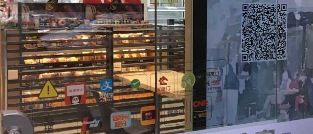

近期，全家四代店首家门店华丽现身，它有哪些惊喜？跟着《Insight印象》一起去赤峰路店探个究竟吧。

签到赚积分
去便利店也可以像玩游戏一样每日打卡签到？全家四代店使之成为可能。入口处特别配备的二维码幕墙使顾客可以通过扫码签到领取积分奖励，并获得全家的优惠活动信息，让购物变得更有趣，更实惠。

个性化识别
相信大家都遇到过这样的情景：站在饮料柜前，看着琳琅满目的商品，为选择哪一款饮料犹豫不决。现在，全家为你解决这个难题。四代店在传统的常温饮料柜上装备了智能屏幕，智能屏幕拥有性别识别功能，随时为你推荐专属饮料。
当有顾客靠近时，智能屏幕会自动变成透明色。所以如果你已心有所属，也可以清晰地看见柜中的产品，直接拿取。
全家四代店里有座咖啡屋
新一代的全家专设了宽敞的咖啡区。区别于购物区明亮的灯光，咖啡区使用暖黄色的照明，配以原木色地板，皮质的柔软座椅和光洁的环保材质桌面，营造出一种温暖舒适的氛围。
以咖啡为主打的全家四代店毫不吝惜地准备了专门的咖啡角，为顾客提供优质咖啡。顾客可以在咖啡角点一杯湃客咖啡，亲手感受来自危地马拉的咖啡豆的品质，或是带走一包充满浓郁香气的咖啡渣。
环保便利和其他
咖啡渣供顾客自取，可用于吸异味、甲醛等。
咖啡角每张桌子边都安装了充电插口，还包括两个USB充电接口，你可以在全家安心享受办公或休闲的时光，也再不必担心手机突然关机的尴尬。
垃圾细心地做了分类处理，桌脚处贴有提醒及时清理垃圾和保管好个人财物的温馨提醒。
咖啡区的壁画是专门从日本定制的，勾画出人们在全家享受慵懒下午的美好场景。
黑色和原木色的拼色座椅与整个咖啡区的色调完美融合，椅面使用软皮材料，从细节处为顾客带来舒适体验。